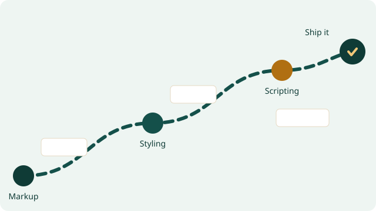

Home
Home
I am Sydney Tamuno Tonye, a software development student in Nigeria studying through BYU–Idaho. This site collects the projects I build while learning accessible, responsive, front-end web development in WDD 231.
Each project starts from semantic HTML, layers on a mobile-first stylesheet, and finishes with a small amount of well-tested JavaScript. The two project links in the navigation lead to the Chamber of Commerce build (week 2) and the Final project (week 6), while this page tracks my progress through the introductory certificate.
- – Credits in the certificate
- – Courses completed
- 3 Live projects
Certificate Courses
The course list below is generated from a JavaScript array of course objects. Use the filters to show every course, only the WDD courses, or only the CSE courses. Courses I have finished are marked with a check badge and a warmer card colour.
Total credits: –
Web and Computer Programming
This page tracks the first certificate of the Software Development degree. It covers the fundamentals of markup, styling, and scripting before the work moves on to server-side development, databases, and mobile apps.
- Foundations Semantic HTML, responsive CSS layout, and the box model.
- Interaction The DOM, events, fetching data, and building small applications.
- Object-oriented programming Classes, collections, testing, and reusable components.
- Full-stack craft Working with APIs, data services, and a final publishable project.
